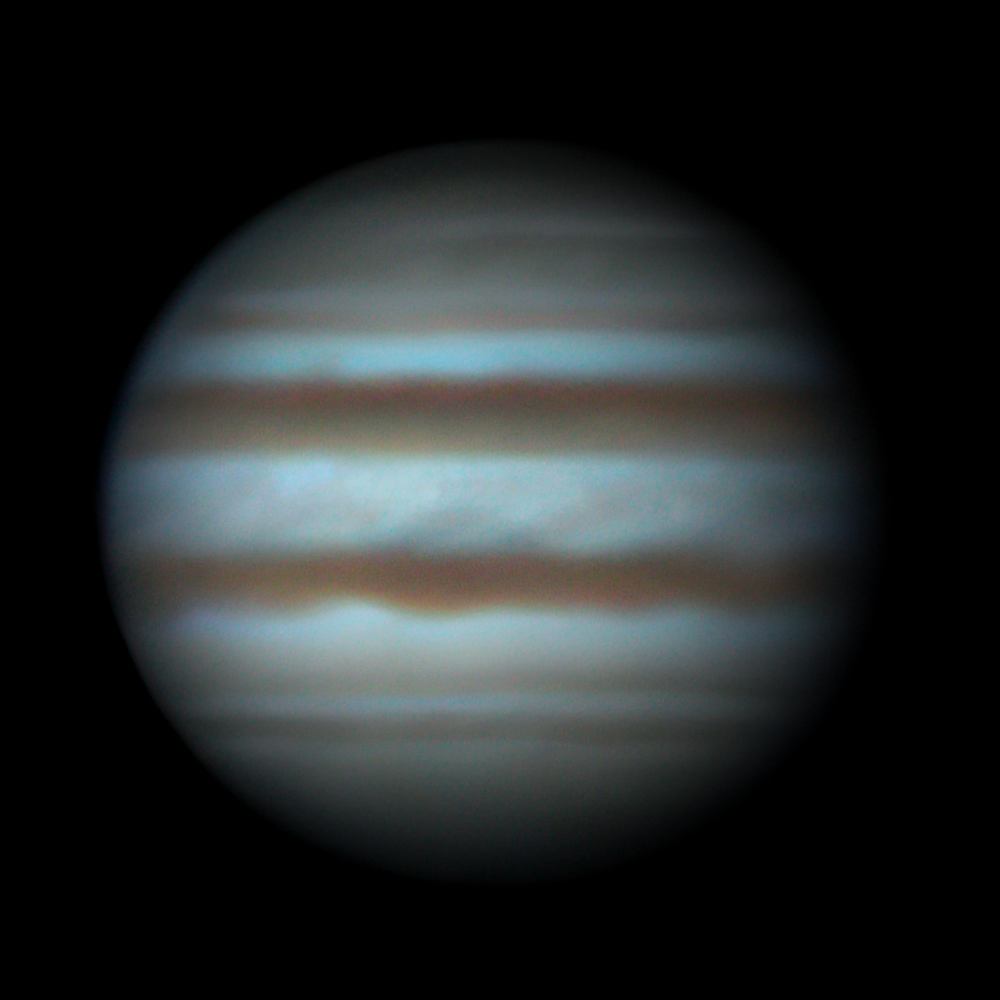
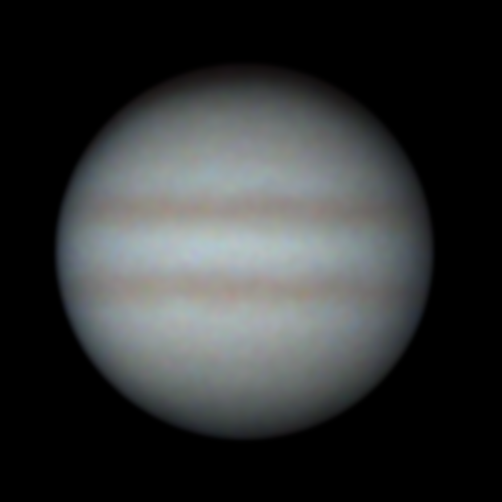

Achieve crisp planetary images from earth-based telescopes. GPU-accelerated alignment, stacking, and sharpening in a modern cross-platform tool.
Drag the slider to compare a single raw frame with the fully processed result.


Watch Jupiter being processed from raw capture to final result.
Complete walkthrough of the Jupiter processing pipeline
A complete pipeline from raw capture to publication-ready planetary images.
Phase correlation alignment with sub-pixel accuracy. Handles atmospheric distortion across hundreds of frames.
Quality-ranked frame selection with sigma clipping. Stack the best percentile of frames for maximum detail.
Multi-scale wavelet decomposition with per-layer controls. Bring out fine planetary detail without noise amplification.
Richardson-Lucy deconvolution to reverse atmospheric and optical blur. Recovers lost resolution from seeing conditions.
Vulkan compute shaders for parallel processing. Process thousands of frames in a fraction of the time.
Streaming architecture processes videos frame-by-frame. Handle massive captures on modest hardware.
Automatic Bayer pattern detection and high-quality demosaicing for one-shot color cameras.
Automatically detects and crops the planetary disk from the frame. Removes black borders from alignment drift.
Full graphical interface for interactive work and a CLI for scripting and batch processing pipelines.
Free and open source. Choose your platform and build.